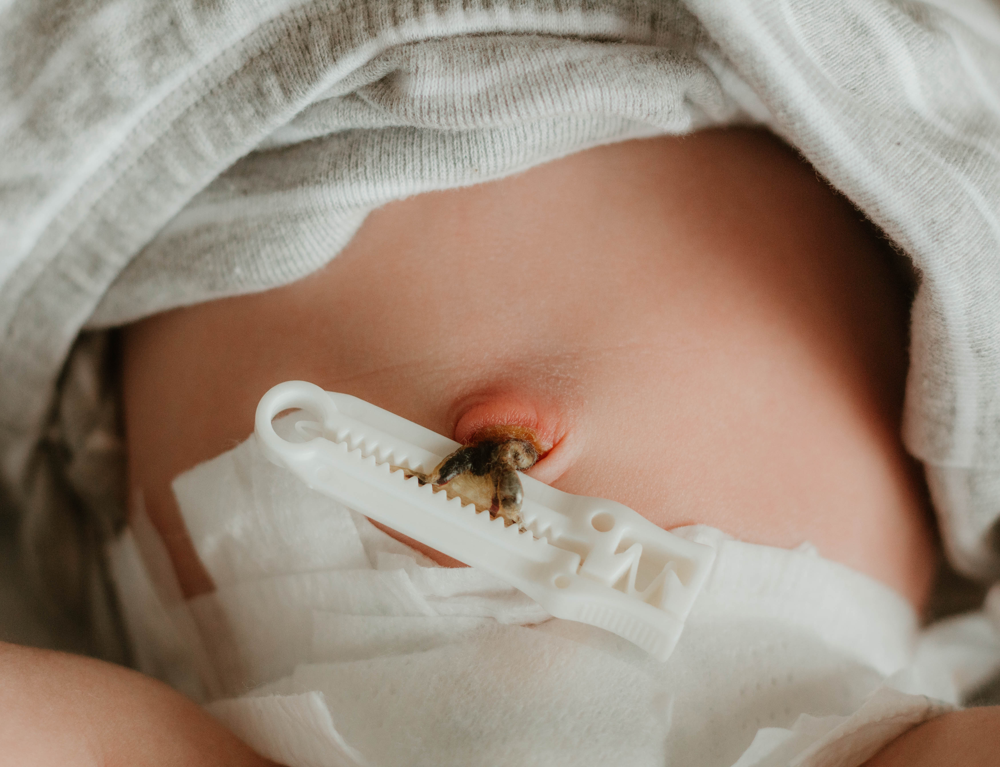
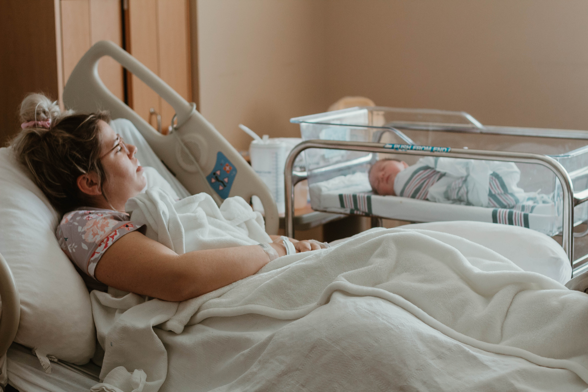
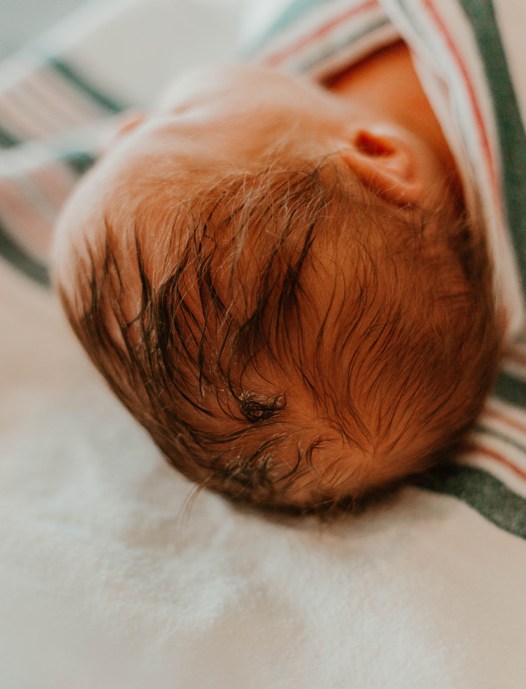
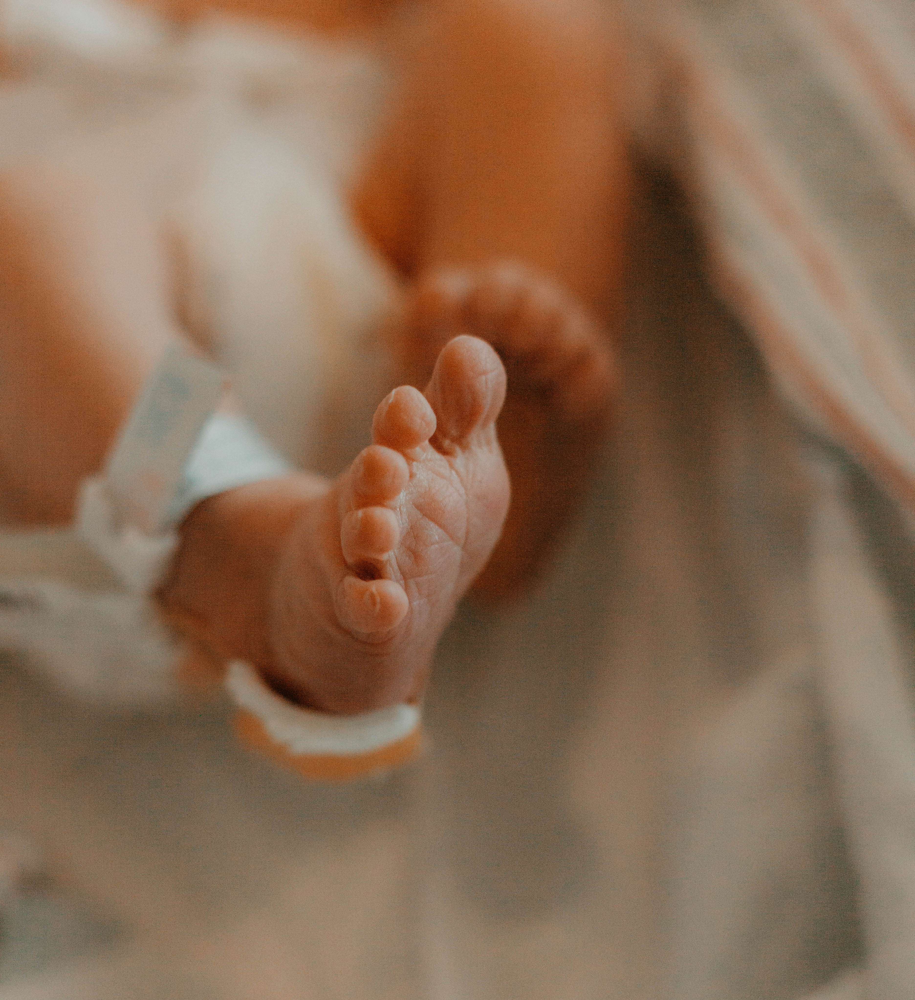
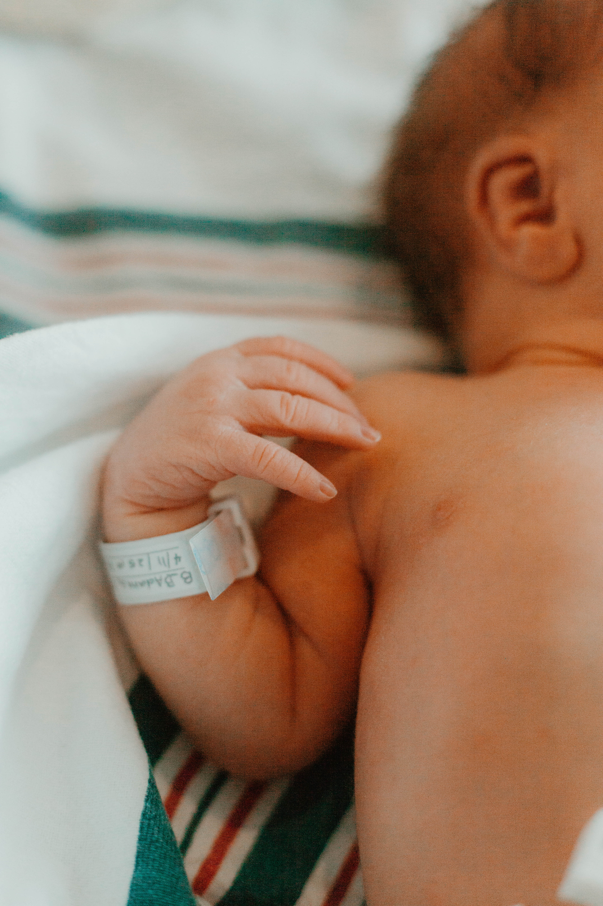
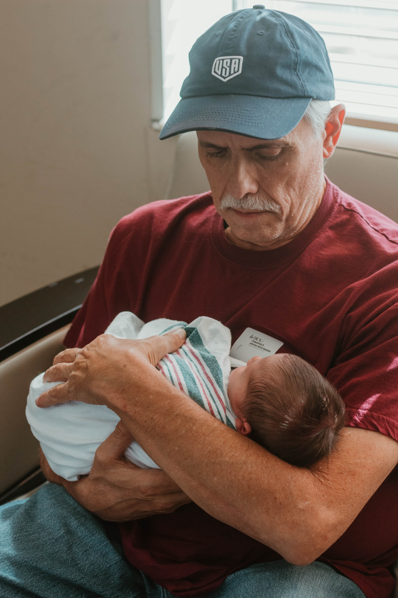

The first hours of your baby's life are filled with moments you'll never get back. Those tiny fingers, weinkled toes, and the overwhelming love thst fills the room.
The First 48 session is a gentle, documentary-styled session that captures the raw intimate moments within the first 48 hours of your sweet blessing after birth.
These sessions are held in your hospital room or birthing center. No posing or stress, just real and raw moments following one of Gods greatest gifts.
These sessions are best scheduled between 30-35 weeks. Let's preserve the details you never want to forget with a simple session filled with SO much love.
Back to Portfolio





© 2026 Grace & Olive Lens